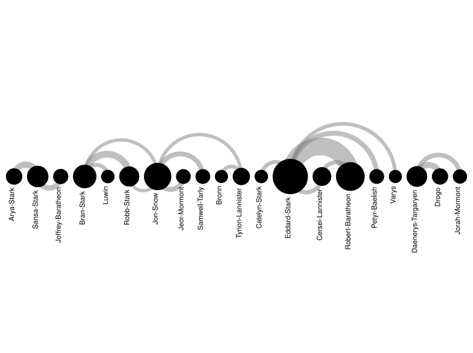

Esta visualización muestra un diagrama de arco que representa la coocurrencia de los personajes del libro "Juego de Tronos", primer libro de la saga "Canción de Hielo y Fuego" escrita por George R.R. Martin. En el dataset utilizado, el cual está disponible aquí, se considera que dos personajes coocurren si sus nombres aparecen a una distancia de unas 15 palabras entre sí. Comentar que se ha realizado un preprocesamiento de los datos para filtrar solo aquellos personajes que tienen un peso (número de coocurrencias) superior a 50, con el objetivo de obtener una visualización más clara y enfocada en los personajes más relevantes. Este diagrama se ha desarrollado utilizando RAWGraphs.
